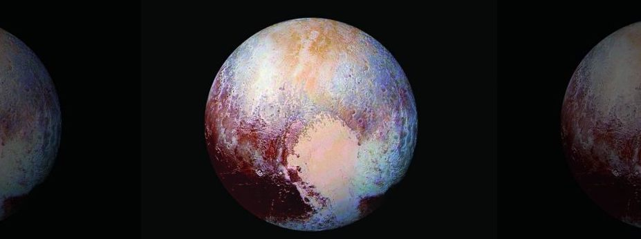

Planet 9’s mission is to raise awareness about Pluto’s planetary status in order to inspire others to think differently about how we classify the members of our solar system. We at Planet 9 think that Pluto,
and other planets like it, deserve to be classfied as Planets so that they can be part of educational cirriculum across the world.
Think Differently
If you're passionate about including Pluto as one of our solar system's planetary bodies or just want to learn more about our mission, make sure to join the Planet 9 movement!

Why Pluto?
By discussing the controversial decision to declassify Pluto, we hope to spark a debate on the educational effects of removing Pluto, and orbital bodies like it, from the curriculum.
Through our efforts, we hope to inspire the need for a more inclusive solar system that invites all discoveries into the fold of what we deem important.
Get Up to Speed
If you'd like to learn more about Pluto's tumultuous history, make sure to check out our timeline as well as the history of Pluto's rise and fall!